Main-window captures: 1568 × 864, device scale 1. Settings captures: 1040 × 640. Narrow log capture: 600 × 864. Same kind-kind cluster and existing resources. No cluster writes. Click images for full size.
Appearance offers independent density, 80% / 90% / 100% / 110% / 125% UI text, and system / normal / reduced motion. Editor and terminal fonts remain separate.
Base UI 0.12.0 source cohort. Mock target: matching form-control heights. Actual browser preference: 20px default font, compact density, 125% UI text. No CSS zoom or root-font override.
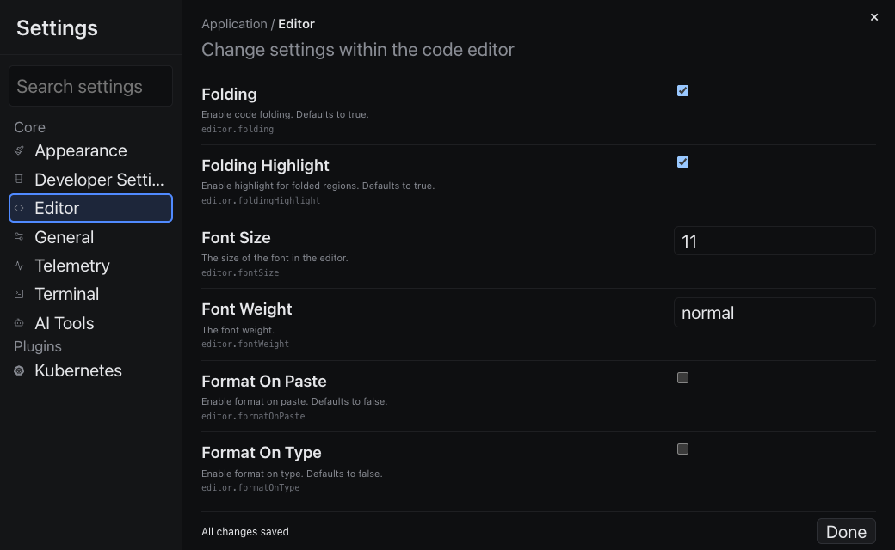
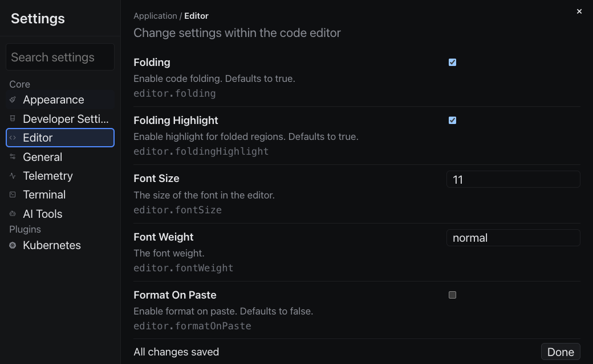
Normal browser font: comfortable 100% · compact 125%. Text fields and file buttons reuse medium control height, font, and inline-padding tokens.
Final-cohort inspector: quiet joined actions · single-target Debug options menu. Exec, Logs, Debug, and its arrow measure 24px, with transparent idle backgrounds and outer borders. The menu was opened and dismissed; no Debug action ran.
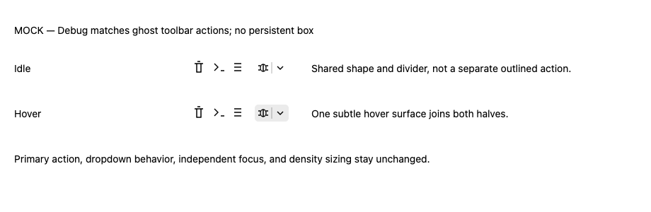
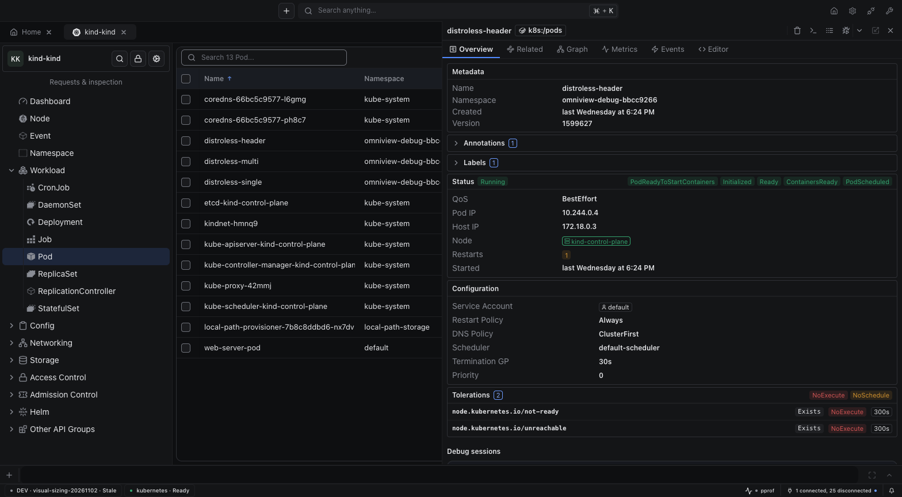
125% text · Open options menu. These captures predate the unrelated avatar fix, merged separately in PR #134.
Mock proposals, not screenshots: joined actions and cluster navigation · caption spacing · form sizing.
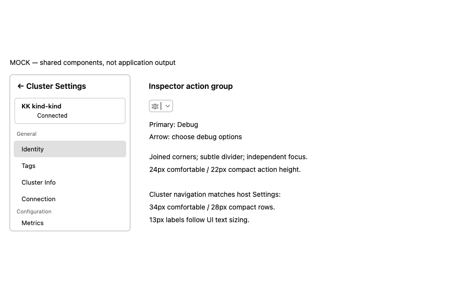
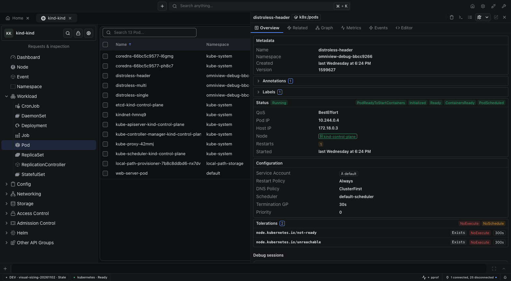
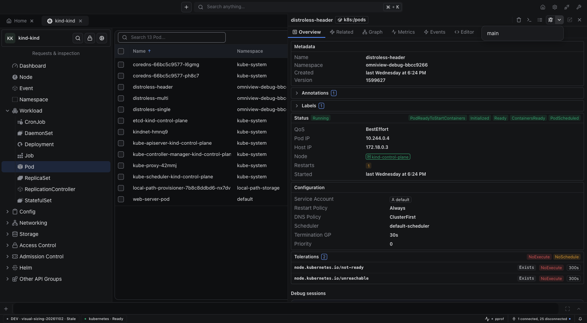
125% Debug control · Compact 100% · Compact 125%.
Cluster navigation matches host Settings: 34px comfortable / 28px compact minimum rows and scalable 13px labels. Compact 100% · Compact 125%.
Caption: 56px minimum, 16px vertical padding. Generic selects now use Base UI, not native browser chrome. Numeric/text fields and selects share the existing medium tier: 36px comfortable / 30px compact. Open select · Compact 100% · Compact 125%.
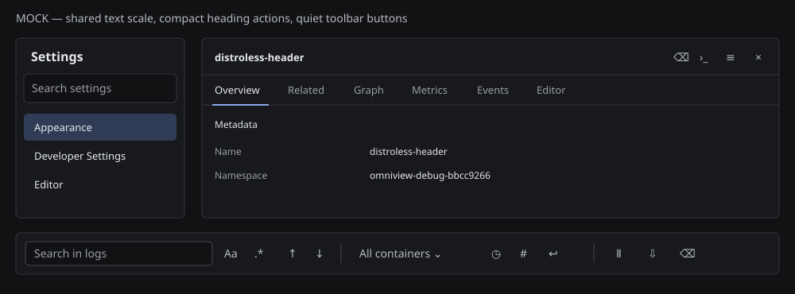
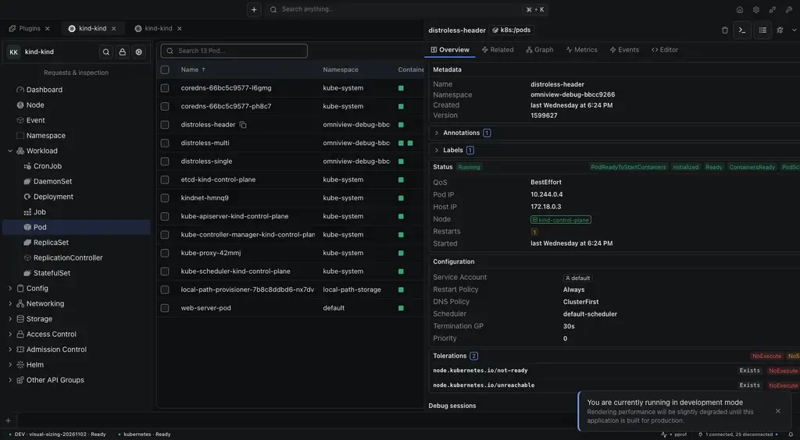
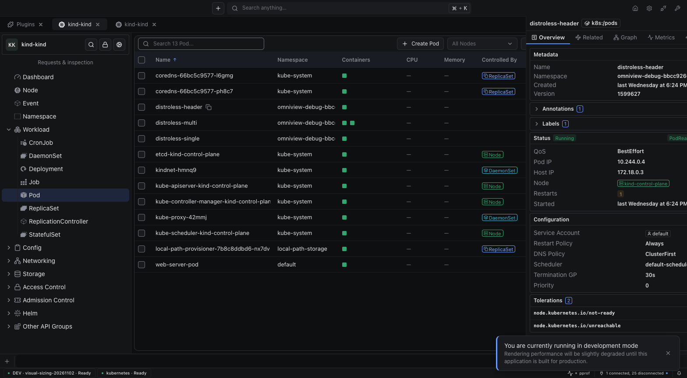
Narrow 600px layout · Compact 100% · Compact 125%. Controls verified on the existing connection-waiting surface; log data delivery is not claimed.
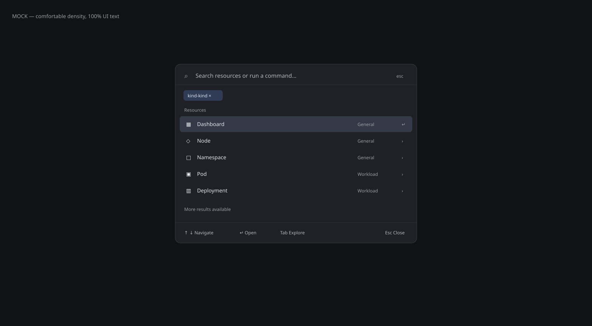
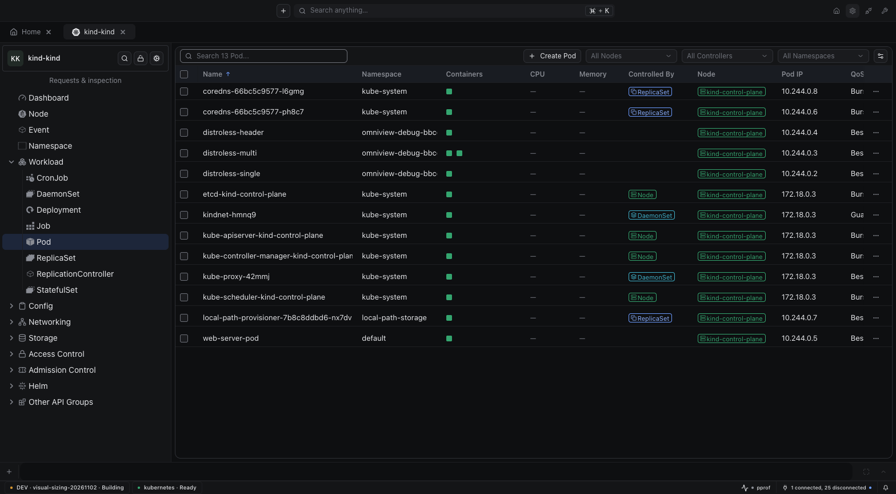
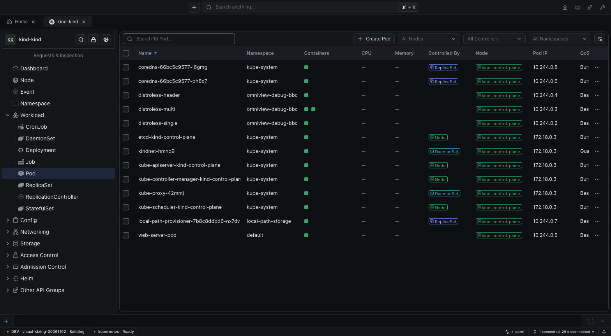
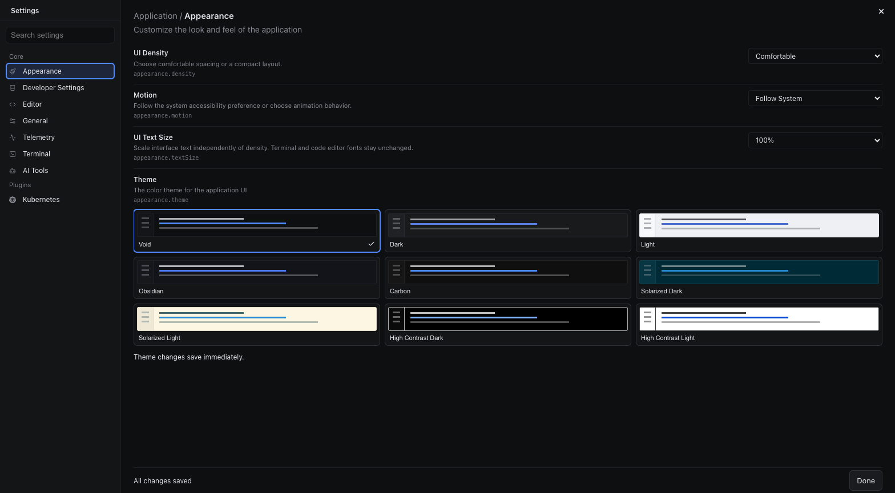
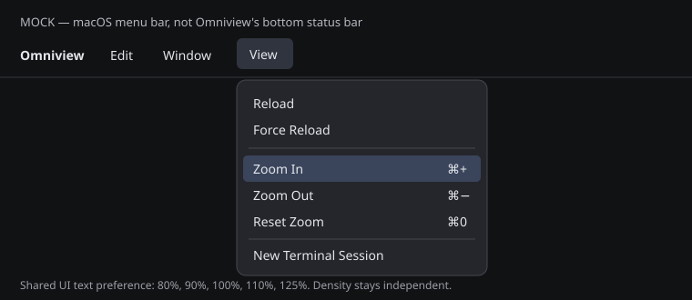
View → Zoom In / Zoom Out / Reset Zoom. Cmd/Ctrl + increases, Cmd/Ctrl − decreases, Cmd/Ctrl 0 resets. No bottom status-bar sizing controls. Available sizes: 80%, 90%, 100%, 110%, 125%.